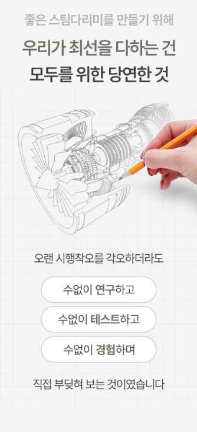
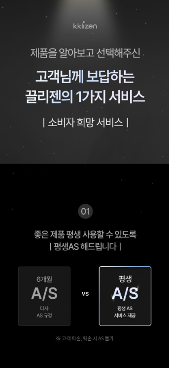

1. 끌리젠 스팀 다리미 핸디형은 어떤 제품일까?
옷걸이에 걸어둔 상태에서 스팀을 분사해 생활 주름을 빠르게 정리하기 좋은 핸디형 스팀다리미입니다. 구매 전에는 정확한 모델명과 사용 목적, 포함 구성품과 관리 방법을 함께 확인하는 것이 좋습니다.
2. 핸디형 스팀다리미의 장점
핸디형 스팀다리미는 다림판을 펴지 않고 옷걸이에 걸린 셔츠, 블라우스와 재킷의 생활 주름을 빠르게 정리하는 데 편리합니다. 일반 다리미처럼 강한 압력으로 각을 잡기보다는 외출 전 간단한 주름 정리에 적합합니다.

3. 예열과 연속 스팀
사용 편의성은 예열시간과 스팀이 얼마나 안정적으로 이어지는지에 따라 달라집니다. 여러 벌을 한 번에 다릴 경우 물탱크 용량과 연속 사용시간을 확인하고, 한두 벌 위주라면 가벼운 무게와 빠른 예열이 더 중요할 수 있습니다.
4. 옷감별 사용 주의
면과 폴리에스터처럼 비교적 관리가 쉬운 소재와 달리 실크, 울, 장식이 많은 의류는 높은 열과 수분에 민감할 수 있습니다. 반드시 의류 케어 라벨과 제품 설명서의 권장 온도를 먼저 확인하고 눈에 띄지 않는 부분에 테스트하세요.

5. 물때와 석회 관리
수돗물의 미네랄 성분이 내부에 쌓이면 스팀구가 막히거나 물방울이 튈 수 있습니다. 제조사가 권장하는 물 종류와 석회 제거 방법을 따르고 사용 후 남은 물을 오래 보관하지 않는 것이 좋습니다.
6. 휴대성과 보관
핸디형 제품은 손잡이 형태와 전원선 길이, 접이식 여부에 따라 보관 편의성이 달라집니다. 여행용으로 생각한다면 본체 크기뿐 아니라 전압 호환과 파우치 포함 여부도 확인하세요.
7. 구매 전 체크리스트
- 정확한 모델명과 옵션을 확인합니다.
- 사용 공간과 목적에 맞는 제품인지 확인합니다.
- 기본 구성품과 별도 구매 소모품을 확인합니다.
- 설치·보관 공간을 확인합니다.
- 세척 및 관리 방법을 확인합니다.
- 배송, 교환, 반품과 보증 조건을 확인합니다.
싸게살래 가전·디지털 목록에서 다양한 제품 구매 가이드를 확인할 수 있습니다.
가전·디지털 전체 상품 보기 →자주 묻는 질문
구매 전에 가장 먼저 확인할 것은 무엇인가요?
정확한 모델명과 핵심 사양, 구성품과 보증 조건을 먼저 확인하는 것이 좋습니다.
온라인 가격은 계속 같은가요?
쿠폰과 판매자, 재고에 따라 달라질 수 있으므로 최종 결제 화면의 가격을 확인해야 합니다.